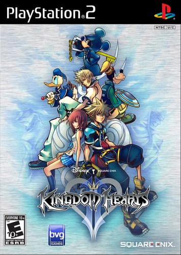

| Menu |
|---|
| Personnages principaux |
| Personnages secondaires |
| L'Organisation XIII |
Présentation
Avec Kingdom Hearts II, Sora et ses amis font un retour fracassant sur PlayStation 2.L'alliance de Square Enix et Disney produit encore des étincelles.
Tetsuya Nomura et son équipe nous montrent une nouvelle fois
que la série a encore de beaux jours devant elle.
Kingdom Hearts II est l'un des épisodes les plus attendus et les plus appréciés des fans,
en atteste ses impressionnants résultats de ventes,
nettement supérieurs à ceux du premier épisode pour une même période de temps.
Le jeu constitue encore aujourd'hui une référence dans son genre.
Synopsis
Un an après les événements relatés dans Kingdom Hearts Chain of Memories,un nouveau héros se réveille dans la Cité du Crépuscule,
une ville située entre le jour et la nuit.
Les vacances d'été se terminent pour Roxas et ses amis,
mais tout ne se passera pas comme il l'espérait...
Sora, l'Elu de la Keyblade,
se réveille à son tour dans un manoir de la Cité aux côtés de Donald et Dingo,
sans savoir comment ils y sont arrivés. En quête d'informations,
ils se retrouvent confrontés à d'étranges adversaires: les Simili et l'Organisation XIII,
un groupe de Simili aux noirs desseins. Nos héros partent à nouveau vers de nouvelles aventures,
vers de nouveaux mondes afin de mettre un terme aux plans de l'Organisation,
et retrouver leurs compagnons.
Ils devront à nouveau faire face aux terribles Sans-coeur et à de troublantes révélations...
Découverte du titre

Tout en gardant les bases du premier épisode,
le titre en corrige les défauts soulignés par les joueurs (notamment la gestion de la caméra)
et apporte son lot de nouveautés.
L'ajout des indispensables commandes réaction accentue le côté attractif et dynamique des combats,
tout en conservant sa simplicité.
C'est avec plaisir que nous retrouvons des mondes Disney déjà visités et quelques nouveaux-venus,
dans un style graphique nous rappelant les classiques de notre enfance.
La série commence à prendre ses propres marques,
toujours bercée par de sublimes thèmes musicaux,
et des ennemis charismatiques.
Kingdom Hearts II se révèle être le digne successeur de Kingdom Hearts,
apportant son lot de nouveautés et répondant dans sa globalité aux attentes des joueurs.
Offrant plus de dynamisme, de fluidité, d'action et disposant d'une histoire plus complexe,
le jeu ne trahit cependant pas ses origines et s'inscrit parfaitement dans la continuité du précédent.